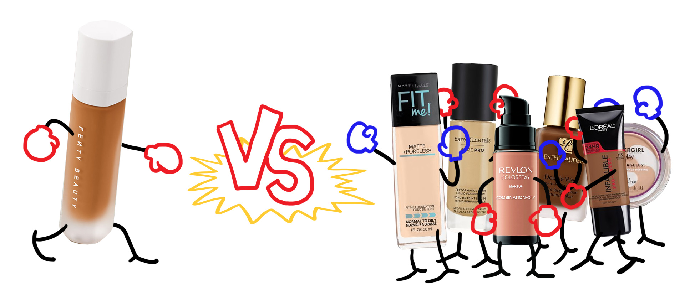

Part 1: Our story begins in the US...
Introducing: Fenty Beauty by Rihanna
 Rihanna made headlines last fall when she launched Fenty Beauty, a makeup line that is explicitly inclusive – created “so that women everywhere would be included.” Their liquid foundation product, Pro Filt’r, was so groundbreaking that it even made it onto Time’s 25 Best Inventions of 2017 list. Its claim to fame: the foundation launched with 40 shades “made for women of all skin colors & undertones."
Rihanna made headlines last fall when she launched Fenty Beauty, a makeup line that is explicitly inclusive – created “so that women everywhere would be included.” Their liquid foundation product, Pro Filt’r, was so groundbreaking that it even made it onto Time’s 25 Best Inventions of 2017 list. Its claim to fame: the foundation launched with 40 shades “made for women of all skin colors & undertones."
But as it turns out, other brands had 40 shades too, and beauty brand Make Up For Ever was not going to let that go. Shortly after Fenty’s launch, they challenged the newcomer in an Instagram post – first stating that they’ve had 40 shades since 2015, then implying that Fenty’s success stemmed from its association with the singer/songwriter/actress rather than from the quality of their products.
Rihanna was unimpressed. She quickly shot back with two comments: “lol. still ashy 🤷🏽♀️” and “shook.” (Ashy refers to the grey color that comes out when someone uses the wrong shade of makeup on their face.) In other words, Rihanna was saying that their foundation lacked range and would still leave people of color looking “ashy.”
How valid is her comeback? Actually, there’s a way to find out with data.

How we measure inclusivity in a line of foundations
- We took color samples from the product pages of the beauty brand’s website.
- Using Photoshop, we extracted the lightness values (using the CIE Lab color model).
- We plotted these lightness values on a histogram, which shows us whether a foundation line caters towards lighter or darker skin tones (see below).
Important disclaimer
Our measurements are only a rough proxy for inclusivity – how a liquid foundation changes when it’s applied to our faces, whether it’s effective across different hues/undertones, and how it looks after a day of wear are all factors we were unable to account for. So please take our findings with a radiant grain of salt.
Let’s Look at Some Bestsellers

Beyond Make Up For Ever, does Fenty’s claim to fame still stand when compared to the bestselling foundations in the US? For this, we combed through a handful of bestseller lists to come up with a list of six products that appeared at least twice.
What About BIPOC-friendly brands?
BIPOC = Black people, Indigenous people, and People of Color
Hey, we get it. Not all brands need to cover all shades equally so maybe some of the best sellers just missed the mark for people with darker skin tones. So, we decided to take a look specifically at brands that are marketed to and recommended for BIPOC. We surveyed twelve articles and filtered for brands that were mentioned 4 or more times (that have foundation products) and came up with two lists:
Non-BIPOC founders
- Lancôme Cosmetics
- MAC Cosmetics
- Bobbi Brown
BIPOC founders
- IMAN Cosmetics
- Black Opal
- Laws of Nature Cosmetics
- Beauty Bakerie
- Black Up
Once again, we sampled their liquid foundation product that had the largest range of shades and used Fenty as a point of comparison.

The other interesting pattern that emerges is that BIPOC-created brands follow a different overall shape than the others. If we aggregate all of our data so far into four groups:
Both US Bestsellers and BIPOC-recommended brands with white founders, crassly speaking, focused on slightly-tanned white people while they do offer products for people of color. The brands created by BIPOC have foundation products distributed much more evenly across the spectrum and “peak” at a much darker shade than their mainstream competitors. Fenty meanwhile, is a mix of the two – they offer steady support across the spectrum but peaks at a pale shade.
So what’s the verdict (on Fenty)?
Based on our data, we believe it’s safe to say:
- ✅ Fenty foundations have a much better range than Make Up Forever
- ✅ They are as good for women of color as the best of the big mainstream brands
- ❎ But do not support the darkest skin tone range (10-20 lightness)
- ✅ Fenty has unparalleled support for women with really light skin tones
- ✅ Having 40 shades as a BIPOC-created brand really is unique
But does it deserve to be dubbed one of Time’s 25 Best Inventions of 2017? 🤷🏽♀️Afterall, that’s worldwide recognition. How does Fenty stack up against make-up brands outside of the US?